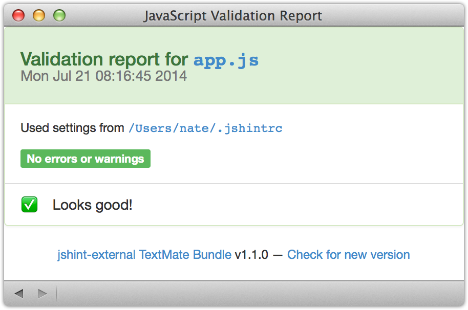
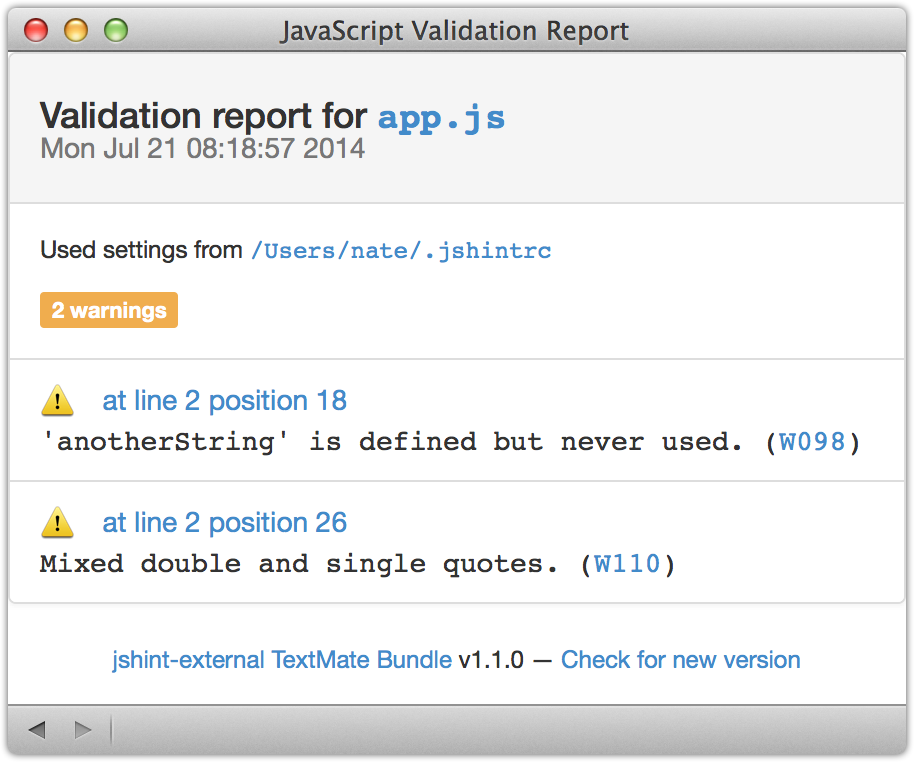

Integrates the JSHint JavaScript validator with TextMate 2
View the Project on GitHub natesilva/jshint-external.tmbundle
This bundle aims to be the best way to run the JSHint JavaScript validator in TextMate 2. (Want to use ESLint instead? Try the javascript-eslint.tmbundle.)

.jshintrc settings, whether stored in the same directory tree as your source file, in your home directory, or referenced from a package.json file.jshint.

If you don’t have JSHint, install it:
[sudo] npm install -g jshintNow install the bundle:
Release notes are found in the Releases section of this GitHub repo.
In most cases no configuration is required. However, in some cases you may want to customize the following:
jshint that is not on your PATH: If jshint is not on your PATH, set the TM_JSHINT_EXTERNAL_JSHINT variable to point to it. Set in TextMate > Preferences… > Variables.⌘S:
⌘S.jsonHintConfig to the package.json file. This key should contain the filename of your JSHint configuration file (JSHint config syntax)..jshintrc file (syntax). Place it in your source directory or any directory above it.~/Library/Application Support/Avian/Pristine Copy/Bundles.jshint-external.tmbundle.~/Library/Application Support/Avian/Bundles.JavaScript JSHint (External).tmbundle, trash it.~/Library/Caches/com.macromates.TextMate.preview.